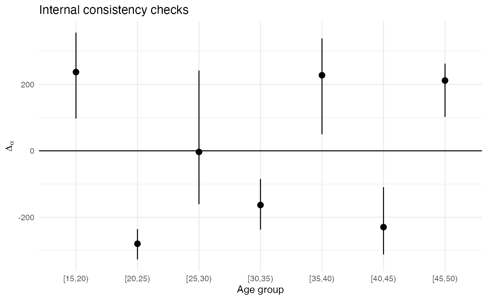

Estimating death rates from sibling history data
Dennis M. Feehan
2026-02-24
sibling-estimates.Rmd
library(siblingsurvival)
library(tidyverse)
#> Warning: package 'tibble' was built under R version 4.4.3
#> Warning: package 'purrr' was built under R version 4.4.3
#> Warning: package 'dplyr' was built under R version 4.4.3
#> ── Attaching core tidyverse packages ──────────────────────── tidyverse 2.0.0 ──
#> ✔ dplyr 1.2.0 ✔ readr 2.1.5
#> ✔ forcats 1.0.1 ✔ stringr 1.6.0
#> ✔ ggplot2 4.0.0 ✔ tibble 3.3.1
#> ✔ lubridate 1.9.4 ✔ tidyr 1.3.1
#> ✔ purrr 1.2.1
#> ── Conflicts ────────────────────────────────────────── tidyverse_conflicts() ──
#> ✖ dplyr::filter() masks stats::filter()
#> ✖ dplyr::lag() masks stats::lag()
#> ℹ Use the conflicted package (<http://conflicted.r-lib.org/>) to force all conflicts to become errors
# be sure you have at least version 0.0.2.9000 of surveybootstrap
# run devtools::install_github('dfeehan/surveybootstrap')
# for the most recent version
library(surveybootstrap)
# this is helfpul for timing
library(tictoc)Overview
It will be helpful to define a few important terms before we start our analysis:
-
ego- an ego is a survey respondent -
cell- a cell is a generic group for which we wish to produce estimates. Usually, a cell is defined by a time period, an age range, and a sex. So, for example, a cell might be women who were age 30-34 in 2015.
For the purposes of this vignette, we’ll assume that we starting from two datasets:
- one dataset has a row for each survey respondent
- one dataset has a row for each sibling who is reported by a survey respondent
We’ll then calculate estimates from the sibling histories in three main steps:
- Create an esc dataset, so called because there is row for each ego X sibling X cell
- Aggregate this esc dataset up into an ec dataset, which has a row for the reports made by each ego for each cell
- Aggregate this ec dataset up into estimates for death rates, using either the individual or aggregate visibility approach (or both)
Opening up the demo datasets
We’ll start by opening up the demonstration DHS dataset.
data(model_dhs_dat)Now we’ll use prep_dhs_sib_histories to ready the
sibling histories for analysis. (Please see the Preparing Data vignette for more
details.)
prepped <- prep_dhs_sib_histories(model_dhs_dat,
varmap = sibhist_varmap_dhs6,
keep_missing = FALSE)
#>
#> No information on respondent sex given; assuming all respondents are female.
#>
#> Found wwgt column; assuming we have a DHS survey and scaling weights.
#> 638 out of 35082 (1.82%) reports about sibs have unknown survival status.
#> 602 out of 35082 (1.72%) reports about sibs have unknown sex.
#> Removing reported sibs missing survival status or sex.
#> ... this removes 642 out of 35082 ( 1.83 %) sibling reports.
# we'll only keep the variable we will need for this analysis
ex.ego <- prepped$ego.dat %>%
## add a 'sex' variable
mutate(sex = 'f') %>%
select(caseid,
psu,
stratum_analysis,
stratum_design,
cluster,
age.cat, sex, wwgt)
ex.sib <- prepped$sib.datLet’s take a look at the datasets we’ve produced. First, here’s a dataset that has information about survey respondents. (We’ll refer to these survey respondents as ‘ego’):
glimpse(ex.ego)
#> Rows: 8,348
#> Columns: 8
#> $ caseid <chr> " 1 1 2", " 1 3 2", " 1 4 …
#> $ psu <dbl> 1, 1, 1, 1, 1, 1, 1, 1, 1, 1, 1, 1, 1, 1, 1, 1, 1, 1,…
#> $ stratum_analysis <dbl> 26, 26, 26, 26, 26, 26, 26, 26, 26, 26, 26, 26, 26, 2…
#> $ stratum_design <dbl> 4, 4, 4, 4, 4, 4, 4, 4, 4, 4, 4, 4, 4, 4, 4, 4, 4, 4,…
#> $ cluster <dbl> 1, 1, 1, 1, 1, 1, 1, 1, 1, 1, 1, 1, 1, 1, 1, 1, 1, 1,…
#> $ age.cat <fct> "[30,35)", "[20,25)", "[40,45)", "[25,30)", "[25,30)"…
#> $ sex <chr> "f", "f", "f", "f", "f", "f", "f", "f", "f", "f", "f"…
#> $ wwgt <dbl> 1.057703, 1.057703, 1.057703, 1.057703, 1.057703, 1.0…And here’s a long-form version of the sibling history data – there’s one row for each reported sibling.
glimpse(ex.sib)
#> Rows: 34,440
#> Columns: 25
#> $ .tmpid <chr> " 1 1 2", " 1 3 2", " …
#> $ caseid <chr> " 1 1 2", " 1 3 2", " …
#> $ wwgt <dbl> 1.057703, 1.057703, 1.057703, 1.057703, 1.0577…
#> $ psu <dbl> 1, 1, 1, 1, 1, 1, 1, 1, 1, 1, 1, 1, 1, 1, 1, 1…
#> $ doi <dbl> 1386, 1386, 1386, 1386, 1386, 1386, 1386, 1386…
#> $ sex <chr> "f", "f", "f", "f", "f", "f", "f", "f", "f", "…
#> $ sibindex <dbl> 1, 1, 1, 1, 1, 1, 1, 1, 1, 1, 1, 1, 1, 1, 1, 1…
#> $ sib.sex <chr> "m", "f", "m", "f", "m", "f", "m", "f", "m", "…
#> $ sib.alive <dbl> 1, 1, 1, 1, 1, 1, 1, 1, 1, 1, 1, 0, 0, 1, 1, 1…
#> $ sib.age <dbl> 42, 27, 46, 33, 40, 49, 22, 30, 49, 50, 35, NA…
#> $ sib.dob <dbl> 876, 1056, 828, 984, 900, 792, 1116, 1020, 792…
#> $ sib.marital.status <dbl> NA, NA, NA, NA, NA, NA, NA, NA, NA, NA, NA, NA…
#> $ sib.death.yrsago <dbl> NA, NA, NA, NA, NA, NA, NA, NA, NA, NA, NA, 3,…
#> $ sib.death.age <dbl> NA, NA, NA, NA, NA, NA, NA, NA, NA, NA, NA, 42…
#> $ sib.death.date <dbl> -1, -1, -1, -1, -1, -1, -1, -1, -1, -1, -1, 13…
#> $ sib.died.pregnant <dbl> NA, NA, NA, NA, NA, NA, NA, NA, NA, NA, NA, NA…
#> $ sib.died.bc.pregnancy <dbl> NA, NA, NA, NA, NA, NA, NA, NA, NA, NA, NA, NA…
#> $ sib.death.cause <dbl> NA, NA, NA, NA, NA, NA, NA, NA, NA, NA, NA, NA…
#> $ sib.time.delivery.death <dbl> NA, NA, NA, NA, NA, NA, NA, NA, NA, NA, NA, NA…
#> $ sib.place.death <dbl> NA, NA, NA, NA, NA, NA, NA, NA, NA, NA, NA, NA…
#> $ sib.num.children <dbl> NA, NA, NA, NA, NA, NA, NA, NA, NA, NA, NA, NA…
#> $ sib.death.year <dbl> NA, NA, NA, NA, NA, NA, NA, NA, NA, NA, NA, NA…
#> $ alternum <chr> "01", "01", "01", "01", "01", "01", "01", "01"…
#> $ sib.endobs <dbl> 1386, 1386, 1386, 1386, 1386, 1386, 1386, 1386…
#> $ sibid <int> 1, 2, 3, 4, 5, 6, 7, 8, 9, 10, 11, 12, 13, 14,…Laying the groundwork
First, we’ll need to add an indicator variable for each sibling’s frame population membership. In other words, we need to create a variable that has the value 1 for each sibling who was eligible to respond to the survey, and 0 otherwise. In this example data, we’ll assume that conditions similar to a typical DHS survey hold: i.e., we’ll assume the survey design was such that siblings would have been eligible to respond if they
- are alive
- are female
- are between the ages of 15 and 50
For a given survey, these criteria will differ. You’ll have to find out what the criteria for inclusion in the frame population were in order to produce estimates from sibling histories.
ex.sib <- ex.sib %>%
mutate(in.F = as.numeric((sib.alive==1) & (sib.age >= 15) & (sib.age <= 49) & (sib.sex == 'f')))Let’s look at the distribution of frame population membership
In this example dataset, a small number of the in.F
values is missing. (In a real dataset, there could well be more.) Since
we need to be able to determine whether or not each sibling is on in the
frame population, we would drop siblings missing in.F
values from the analysis.
Specifying cells
When we produce estimated death rates from sibling histories, we usually do so for different sex X age group X time period combinations. These are called cells.
Our next step is to create an object that describes the cells that we
plan to produce death rate estimates for. This means we need to specify
the time period and age groups that we’ll be using. We’ll use the helper
function cell_config to do this:
cc <- cell_config(age.groups='5yr',
time.periods='7yr_beforeinterview',
start.obs='sib.dob', # date of birth
end.obs='sib.endobs', # either the date respondent was interviewed (if sib is alive) or date of death (if sib is dead)
event='sib.death.date', # date of death (for sibs who died)
age.offset='sib.dob', # date of birth
time.offset='doi', # date of interview
exp.scale=1/12)We’re specifying that we want
- 5-year age groups, starting from 15 and ending at 65
- to produce estimates for the 7-year window before each survey interview (so, slightly different for each respondent)
- the
dobcolumn of our sibling dataset has the time siblings start being observed (their birthdate) - the
endobscolumn of our sibling dataset has the time siblings stop being observed (the interview or, if they’re dead, the date of death) - the
death.datecolumn of our sibling dataset has the date the sibling died (if the sibling died) - the
doicolumn of our sibling dataset has the date the respondent who reported about the sibling was interviewed - in our survey, times are counted in months, so we set
exp.scale=1/12to indicate that we need to divide total exposures by 12 to get years
Estimating death rates
Given these preparatory steps, the sibling_estimator
function will take care of estimating death rates from the sibling
histories for us.
ex_ests <- sibling_estimator(sib.dat = ex.sib,
ego.id = 'caseid', # column with the respondent id
sib.id = 'sibid', # column with sibling id
# (unique for each reported sibling)
sib.frame.indicator = 'in.F', # indicator for sibling frame population membership
sib.sex = 'sib.sex', # column with sibling's sex
cell.config=cc, # cell configuration we created above
weights='wwgt') # column with the respondents' sampling weights
names(ex_ests)
#> [1] "asdr.ind" "asdr.agg" "ec.dat" "esc.dat"sibling_estimator returns a list with the results. We’ll
focus on asdr.ind, which has the individual visibility
estimates, and asdr.agg, which has the aggregate visibility
estimates.
Here are the individual visibility estimates:
glimpse(ex_ests$asdr.ind)
#> Rows: 20
#> Columns: 10
#> $ time.period <chr> "7yr_beforeint", "7yr_beforeint", "7yr_beforeint", "7yr_be…
#> $ sib.sex <chr> "f", "f", "f", "f", "f", "f", "f", "f", "f", "f", "m", "m"…
#> $ sib.age <chr> "[15,20)", "[20,25)", "[25,30)", "[30,35)", "[35,40)", "[4…
#> $ num.hat <dbl> 40.632794, 58.452102, 37.335533, 35.027380, 27.127385, 19.…
#> $ denom.hat <dbl> 7724.0549, 7931.6173, 6980.3260, 5548.5989, 4336.3677, 274…
#> $ ind.y.F <dbl> 11400.964, 11400.964, 11400.964, 11400.964, 11400.964, 114…
#> $ n <int> 6864, 6864, 6864, 6864, 6864, 6864, 6864, 6864, 6864, 6864…
#> $ wgt.sum <dbl> 6798.047, 6798.047, 6798.047, 6798.047, 6798.047, 6798.047…
#> $ asdr.hat <dbl> 0.005260552, 0.007369506, 0.005348680, 0.006312833, 0.0062…
#> $ estimator <chr> "sib_ind", "sib_ind", "sib_ind", "sib_ind", "sib_ind", "si…And here are the aggregate visibility estimates
glimpse(ex_ests$asdr.agg)
#> Rows: 20
#> Columns: 9
#> $ time.period <chr> "7yr_beforeint", "7yr_beforeint", "7yr_beforeint", "7yr_be…
#> $ sib.sex <chr> "f", "f", "f", "f", "f", "f", "f", "f", "f", "f", "m", "m"…
#> $ sib.age <chr> "[15,20)", "[20,25)", "[25,30)", "[30,35)", "[35,40)", "[4…
#> $ num.hat <dbl> 80.640472, 108.425029, 66.546631, 61.344200, 46.548261, 33…
#> $ denom.hat <dbl> 14696.0833, 15949.0545, 14466.8583, 11597.0465, 8851.6251,…
#> $ n <int> 6864, 6864, 6864, 6864, 6864, 6864, 6864, 6864, 6864, 6864…
#> $ wgt.sum <dbl> 6798.047, 6798.047, 6798.047, 6798.047, 6798.047, 6798.047…
#> $ asdr.hat <dbl> 0.005487208, 0.006798210, 0.004599937, 0.005289640, 0.0052…
#> $ estimator <chr> "sib_agg", "sib_agg", "sib_agg", "sib_agg", "sib_agg", "si…Plotting the results
We’ll make some plots showing the results
ggplot(ex_ests$asdr.ind) +
geom_line(aes(x=sib.age, y=1000*asdr.hat, color=sib.sex, group=sib.sex)) +
theme_minimal() +
scale_y_log10() +
ggtitle('individual visibility estimator, 7yr before survey')
ggplot(ex_ests$asdr.agg) +
geom_line(aes(x=sib.age, y=1000*asdr.hat, color=sib.sex, group=sib.sex)) +
theme_minimal() +
scale_y_log10() +
ggtitle('aggregate visibility estimator, 7yr before survey')
compare <- bind_rows(ex_ests$asdr.ind, ex_ests$asdr.agg)
ggplot(compare) +
geom_line(aes(x=sib.age, y=1000*asdr.hat, color=sib.sex, linetype=estimator, group=interaction(estimator, sib.sex))) +
theme_minimal() +
#facet_grid(sex ~ .) +
facet_grid(. ~ sib.sex) +
scale_y_log10() +
ggtitle('both estimators, 7yr before survey')
Variance estimates
In practice, we want point estimates and estimated sampling
uncertainty for the death rates. We’ll use the rescaled bootstrap to
estimate sampling uncertainty. This can be done with the
surveybootstrap package.
Before we use the rescaled bootstrap, we need to know a little bit about the sampling design of the survey we’re working with. In this example dataset, we have a stratified, multistage design. So we’ll need to tell the bootstrap function about the strata and the primary sampling units. In this example data, these are indicated by the ‘stratum’ and ‘psu’ columns of the dataset.
(NOTE: this takes about a minute or so on a 2018 MBP for 1000 resamples.)
set.seed(101010)
tic('running bootstrap')
## this will take a little while -- for 1000 reps, it takes about 10 minutes on a 2018 Macbook Pro
#num.boot.reps <- 1000
# reduce number of reps to help vignette build faster
num.boot.reps <- 100
# The Guide to DHS Statistics DHS-8
# suggests using what we call the `stratum_design` variable
# (v023) in calculating sampling-based standard errors
bootweights <- surveybootstrap::rescaled.bootstrap.weights(survey.design = ~ psu + strata(stratum_design),
# a high number is good here, though that will obviously
# make everything take longer
num.reps=num.boot.reps,
idvar='caseid', # column with the respondent ids
weights='wwgt', # column with the sampling weight
survey.data=ex.ego # note that we pass in the respondent data, NOT the sibling data
)
toc()
#> running bootstrap: 0.386 sec elapsedThe result, bootweights, is a dataframe that has a row
for each survey respondent, a column for the survey respondent’s ID, and
then num.boot.reps columns containing survey weights that
result from the bootstrap procedure. The basic idea is to calculate
estimated death rates using each one of the num.boot.reps
sets of weights. The variation across the estimates is then an estimator
for the sampling variation.
To make this easier, the sibling_estimator function can
take a dataset with bootstrap resampled weights; it will then calculate
and summarize the estimates for you.
(NOTE: this is slow; it takes about 35 minutes or so on a 2018 MBP
when bootweights has 1000 resamples.)
# to save time, we'll only use a subset of the bootstrap replicates
short.bootweights <- bootweights %>% select(1:11)
#est.bootweights <- bootweights
est.bootweights <- short.bootweights
tic('calculating estimates with bootstrap')
ex_boot_ests <- sibling_estimator(sib.dat = ex.sib,
ego.id = 'caseid',
sib.id = 'sibid',
sib.frame.indicator = 'in.F',
sib.sex = 'sib.sex',
cell.config=cc,
boot.weights=est.bootweights, # to get sampling uncertainty, we pass boot.weights into sibling_estimator
return.boot=TRUE, # when TRUE, return all of the resampled estimates (not just summaries)
weights='wwgt')
toc()
#> calculating estimates with bootstrap: 4.198 sec elapsedFinally, let’s plot the estimated death rates along with their sampling uncertainty:
ggplot(ex_boot_ests$asdr.ind) +
geom_ribbon(aes(x=sib.age, ymin=1000*asdr.hat.ci.low, ymax=1000*asdr.hat.ci.high, fill=sib.sex, group=sib.sex), alpha=.2) +
geom_line(aes(x=sib.age, y=1000*asdr.hat, color=sib.sex, group=sib.sex)) +
theme_minimal() +
scale_y_log10() +
ggtitle('individual visibility estimator, 7yr before survey')
#> Warning in scale_y_log10(): log-10 transformation introduced
#> infinite values.
ggplot(ex_boot_ests$asdr.agg) +
geom_ribbon(aes(x=sib.age, ymin=1000*asdr.hat.ci.low, ymax=1000*asdr.hat.ci.high, fill=sib.sex, group=sib.sex), alpha=.2) +
geom_line(aes(x=sib.age, y=1000*asdr.hat, color=sib.sex, group=sib.sex)) +
theme_minimal() +
scale_y_log10() +
ggtitle('aggregate visibility estimator, 7yr before survey')
#> Warning in scale_y_log10(): log-10 transformation introduced
#> infinite values.
Internal consistency checks
In this section, we illustrate how to conduct internal consistency checks:
NOTE: The IC checks can take a while – about 36 minutes for 1000 bootstrap reps on a 2018 MBP
# toggle between short bootweights (faster, for coding) and long bootweights (for realism)
ic.bootweights <- short.bootweights
#ic.bootweights <- bootweights
tic("Internal consistency checks")
ic.checks <- sib_ic_checks(ex_boot_ests$esc.dat,
ego.dat=ex.ego,
ego.id='caseid',
sib.id='sibid',
sib.frame.indicator='in.F',
sib.cell.vars=c('sib.age', 'sib.sex'),
ego.cell.vars=c('age.cat', 'sex'),
boot.weights=ic.bootweights)
toc()
#> Internal consistency checks: 0.292 sec elapsed
names(ic.checks)
#> [1] "ic.summ" "ic.boot.ests"We can look at ic.checks$ic.summ, which has summarized
output:
glimpse(ic.checks$ic.summ)
#> Rows: 7
#> Columns: 27
#> $ cell <chr> "[15,20)_X_f", "[20,25)_X_f", "[25,30)_X_f…
#> $ age.cat <chr> "[15,20)", "[20,25)", "[25,30)", "[30,35)"…
#> $ sex <chr> "f", "f", "f", "f", "f", "f", "f"
#> $ diff_mean <dbl> 217.681488, -280.571617, 4.100908, -118.68…
#> $ diff_se <dbl> 79.80164, 103.48449, 92.09746, 90.32214, 1…
#> $ diff_ci_low <dbl> 61.31572, -439.30176, -116.38523, -260.483…
#> $ diff_ci_high <dbl> 293.215050, -107.512966, 137.894372, 8.833…
#> $ abs_diff_mean <dbl> 217.68149, 280.57162, 77.89882, 122.88106,…
#> $ abs_diff_se <dbl> 79.80164, 103.48449, 41.93034, 83.85326, 1…
#> $ abs_diff_ci_low <dbl> 61.31572, 107.51297, 14.76047, 23.69984, 6…
#> $ abs_diff_ci_high <dbl> 293.2151, 439.3018, 144.3283, 260.4840, 54…
#> $ diff2_mean <dbl> 53116.701, 88358.567, 7650.565, 21427.988,…
#> $ diff2_se <dbl> 28519.506, 57939.806, 6922.625, 24670.378,…
#> $ diff2_ci_low <dbl> 5646.2832, 13768.2134, 289.0865, 586.9915,…
#> $ diff2_ci_high <dbl> 85983.26, 195463.36, 20965.82, 68297.22, 2…
#> $ normalized_diff_mean <dbl> 1.125949e-05, -1.545307e-05, 2.160616e-07,…
#> $ normalized_diff_se <dbl> 4.372164e-06, 6.935741e-06, 4.343266e-06, …
#> $ normalized_diff_ci_low <dbl> 3.005497e-06, -2.687438e-05, -5.311261e-06…
#> $ normalized_diff_ci_high <dbl> 1.577190e-05, -5.253123e-06, 6.412978e-06,…
#> $ abs_normalized_diff_mean <dbl> 1.125949e-05, 1.545307e-05, 3.693324e-06, …
#> $ abs_normalized_diff_se <dbl> 4.372164e-06, 6.935741e-06, 1.938959e-06, …
#> $ abs_normalized_diff_ci_low <dbl> 3.005497e-06, 5.253123e-06, 6.635886e-07, …
#> $ abs_normalized_diff_ci_high <dbl> 1.577190e-05, 2.687438e-05, 6.551828e-06, …
#> $ normalized_diff2_mean <dbl> 1.439804e-10, 2.820916e-10, 1.702425e-11, …
#> $ normalized_diff2_se <dbl> 8.313410e-11, 2.319066e-10, 1.440957e-11, …
#> $ normalized_diff2_ci_low <dbl> 1.420808e-11, 3.354854e-11, 6.805513e-13, …
#> $ normalized_diff2_ci_high <dbl> 2.488334e-10, 7.340667e-10, 4.324025e-11, …It’s often helpful to plot the results of the internal consistency checks:
ggplot(ic.checks$ic.summ) +
geom_hline(yintercept=0) +
geom_pointrange(aes(x=age.cat,
y=diff_mean,
ymin=diff_ci_low,
ymax=diff_ci_high)) +
theme_minimal() +
ggtitle("Internal consistency checks") +
xlab("Age group") +
ylab(expression(Delta[alpha]))
#ggplot(ic.checks$ic.summ) +
# geom_hline(yintercept=0) +
# geom_pointrange(aes(x=age.cat,
# y=agg_diff_mean,
# ymin=agg_diff_ci_low,
# ymax=agg_diff_ci_high)) +
# theme_minimal() +
# ggtitle("Internal consistency checks (aggregate)") +
# xlab("Age group") +
# ylab(expression(Delta[alpha]))
#
#ggplot(ic.checks$ic.summ) +
# geom_hline(yintercept=0) +
# geom_pointrange(aes(x=age.cat,
# y=ind_diff_mean,
# ymin=ind_diff_ci_low,
# ymax=ind_diff_ci_high)) +
# theme_minimal() +
# ggtitle("Internal consistency checks (individual)") +
# xlab("Age group") +
# ylab(expression(Delta[alpha]))Visibilities
sib.F.dat <- ex.sib %>%
group_by(caseid) %>%
summarize(y.F = sum(in.F))
ego.vis <- ex.ego %>%
select(caseid, wwgt, age.cat, sex) %>%
left_join(sib.F.dat, by='caseid')
# if nothing was joined in, there are no sibs
ego.vis <- ego.vis %>%
mutate(y.F=ifelse(is.na(y.F), 0, y.F))
ego.vis.agg <- ego.vis %>%
group_by(sex, age.cat) %>%
summarise(y.F.bar = weighted.mean(y.F, wwgt)) %>%
mutate(adj.factor = y.F.bar / (y.F.bar + 1))
#> `summarise()` has regrouped the output.
#> ℹ Summaries were computed grouped by sex and age.cat.
#> ℹ Output is grouped by sex.
#> ℹ Use `summarise(.groups = "drop_last")` to silence this message.
#> ℹ Use `summarise(.by = c(sex, age.cat))` for per-operation grouping
#> (`?dplyr::dplyr_by`) instead.Make adjusted individual estimates
adj.agg.ests <- ex_ests$asdr.agg %>%
left_join(ego.vis.agg,
by=c('sib.sex'='sex', 'sib.age'='age.cat')) %>%
mutate(adj.factor = ifelse(is.na(adj.factor), 1, adj.factor),
estimator = 'sib_agg_adj',
asdr.hat = asdr.hat * adj.factor)And plot a comparison
compare <- bind_rows(ex_ests$asdr.ind, ex_ests$asdr.agg, adj.agg.ests)
ggplot(compare) +
geom_line(aes(x=sib.age, y=1000*asdr.hat, color=sib.sex, linetype=estimator, group=interaction(estimator, sib.sex))) +
theme_minimal() +
#facet_grid(sex ~ .) +
facet_grid(. ~ sib.sex) +
scale_y_log10() +
ggtitle('sibling estimators, 7yr before survey')